A protease-activated nanobody mask
A nanobody that stays inert in circulation and binds toxin only after a protease cuts its tether. The regulatory part lives in a separate mask and linker, so an established neutralizing nanobody carries over unchanged. Everything below is computed from one experimental structure.
Three states, one chain
A single polypeptide: designed mask M, protease-cleavable linker L, fixed nanobody N. Cleavage severs the tether, the mask diffuses away, and the original paratope is free to take toxin T.
Where the paratope is, and where a mask could attach
Co-crystal VHH (TPL1158_01_C09) - alpha-cobratoxin (Naja kaouthia), x-ray diffraction at 3.0 Å, deposited 2024-08-02. Four independent copies sit in the asymmetric unit, so the interface is measured four times and the spread is a free reproducibility check.

| geometry | Å | consequence |
|---|---|---|
| N-terminus to paratope centroid | 11.78 | a short linker already reaches |
| N-terminus to nearest paratope residue | 0.0 | the N-terminus is in the paratope |
| C-terminus to paratope centroid | 41.95 | 3.6× further to span |
| paratope maximum extent | 21.75 | surface a mask must cover |
| nanobody radius of gyration | 14.84 | scale reference |
9GCN chains A and X, as deposited.
Masking and release pull in opposite directions
A tethered mask behaves as if present at an effective concentration set by the linker. Treating the Gly/Ser linker as a worm-like chain with persistence length 4.5 Å and 3.8 Å per residue, the end-to-end distribution gives Ceff at the distance the linker has to span — a distance measured in stage 1, not assumed.
Ceff(d) = 1660.54 · (3 / 2π⟨r²⟩)3/2 · e−3d²/2⟨r²⟩ [M]
Pmasked = Ceff / (Ceff + KD,M)
PNT = (T/KD,T) / (1 + T/KD,T + M/KD,M)



Taken from the structure, with controls
A mask has to engage this paratope. One peptide is already known to: the antigen's own contact segment. Grafting it needs no generative model, and the scrambled, truncated and inert versions give the comparison its meaning.
| antigen segment | sequence | length | contacts |
|---|---|---|---|
| R33–V37 | RGKRV | 5 | 5 |
| W25–F29 | WCDAF | 5 | 4 |
| T6–I9 | TPDI | 4 | 3 |
| mask | sequence | aa | kind | origin |
|---|---|---|---|---|
| epi1 | RGKRV | 5 | epitope graft | antigen R33-V37, 5 contact residues |
| epi1_half | RGK | 3 | truncated control | leading half of the graft |
| epi1_scram | RGKVR | 5 | scrambled control | same composition, shuffled (seed 42) |
| epi2 | WCDAF | 5 | epitope graft | antigen W25-F29, 4 contact residues |
| polyG | GGGGGGGG | 8 | inert control | no designed interaction; masking should fail |
Predicted structures
Each construct folded from sequence alone. Pick one to inspect: the mask is tethered at the N-terminus and the paratope is drawn as sticks, so whether the mask covers it is visible directly.
What is not computed here
| component | what it would add | what it needs |
|---|---|---|
| RFdiffusion · BindCraft | mask backbones beyond grafted epitopes | GPU BindCraft also wants AF2 weights and PyRosetta |
| AlphaFold 3 · Boltz-2 · Chai-1 | the nanobody–toxin complex and mask–toxin competition | GPU model access |
| BioEmu-2 | conformational ensembles in place of one structure | GPU multichain support is recent |
| CleaveNet | linkers generated against a target cleavage profile | data trained on 18 human MMPs; venom metalloproteinases are out of distribution |
| Trigger selectivity | cleavage by the local protease ensemble, resistance elsewhere | data peptide-cleavage measurements that do not exist yet |
Six stages, no hand-entered numbers
uv venv && uv pip install -e .
for s in pipeline/0*.py; do python "$s"; done
Each stage writes a JSON file; figures and this page are generated from those files. The folding stage runs on CPU — a GPU only makes it faster — and a Colab notebook runs the same step on a free T4.
Sources
- Damsbo A. et al. Co-crystal of VHH TPL1158_01_C09 with α-cobratoxin. PDB 9GCN
- Ahmadi S. et al. Nanobody-based recombinant antivenom for cobra, mamba and rinkhals bites. Nature 647:716–725 (2025). 10.1038/s41586-025-09661-0
- Desnoyers L.R. et al. Tumor-specific activation of an EGFR-targeting probody. Science Translational Medicine 5:207ra144 (2013). 10.1126/scitranslmed.3006682
- Zhou H.-X. Loops in proteins can be modeled as worm-like chains. Journal of Physical Chemistry B 105:6763–6766 (2001). 10.1021/jp011355n
- Lin Z. et al. Evolutionary-scale prediction of atomic-level protein structure with a language model. Science 379:1123–1130 (2023). 10.1126/science.ade2574
- Shrake A., Rupley J.A. Environment and exposure to solvent of protein atoms. Journal of Molecular Biology 79:351–371 (1973). 10.1016/0022-2836(73)90011-9
- Martin-Alonso C. et al. Deep learning guided design of protease substrates. Nature Communications 17:54 (2026). 10.1038/s41467-025-67226-1
- Pacesa M. et al. One-shot design of functional protein binders with BindCraft. Nature 646:483–492 (2025). 10.1038/s41586-025-09429-6
- Bennett N.R. et al. Atomically accurate de novo design of antibodies with RFdiffusion. Nature 649:183–193 (2025). 10.1038/s41586-025-09721-5